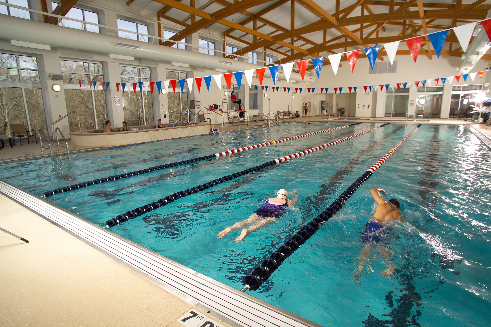

The Somerset Community Pool is open year round and fully accessible. There are yearly passes available as well as casual swimmer memberships.
Drop-ins are welcome, buy a day pass and take advantage of our facility.
Our pool offers classes for all levels, including children's swimming lessons.
Our fitness classes are a great way to stay in shape without being too hard on your joints. You can sign up for a season of classes or pay-per-visit. See our reception staff for details.